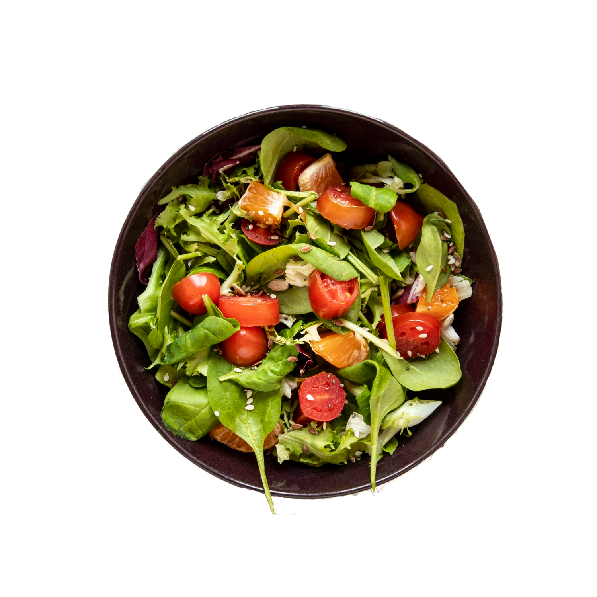
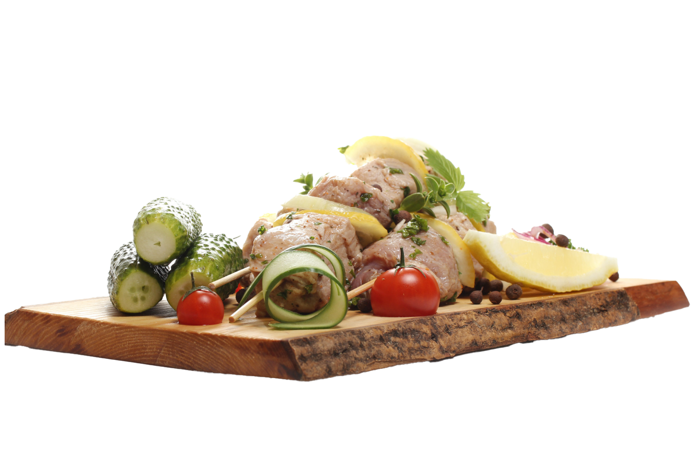

Gastrophy
about us
Unsere Produkte sind aus der Region und beschäftigen sich mit diesen. Schweizer Gerichte kreativ und auf eine neue Art zu präsentieren, dafür stehen wir und leben es auch vor. Die Menükarten sind saisonal und Food Weste frei. Gastrophy stehlt bürgerliche Vorlieben auf den Tisch und serviert sie mit grosser Bravour! Unser Geschäft bietet eine bezaubernde Geschichte, die durch ihre atemberaubenden Bilder und Farbnuancen geprägt wird.

Chef Koch Lucas
Unsere Küche arbeite sehr nach mit dem lokalen Bauern zusammen, der Ihnen das Weizenmehl bringt für die Brötchen sowie Fleisch, Rind, Schwein, Huhn und Eier. Die Kooperation mit dem Bauern erlauben uns Ihnen frische und naturnahe Produkte zu präsentieren. Lucas und sein Team bemühen sich ständig, sich mit den Lokalzutaten eine Reise durch die Geschmackswelt zu machen, damit jeder Biss unvergesslich ist.
